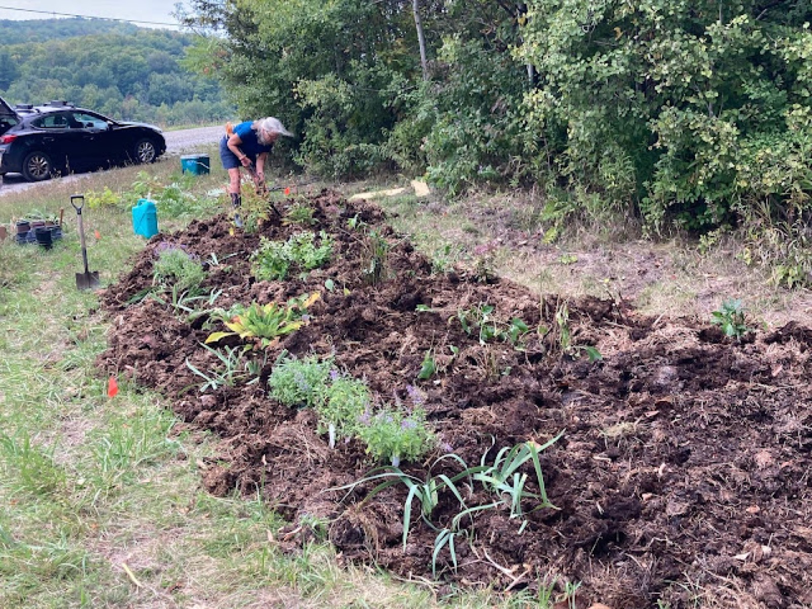
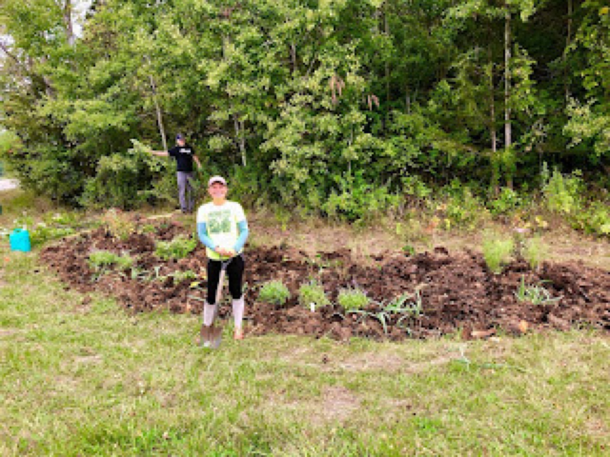
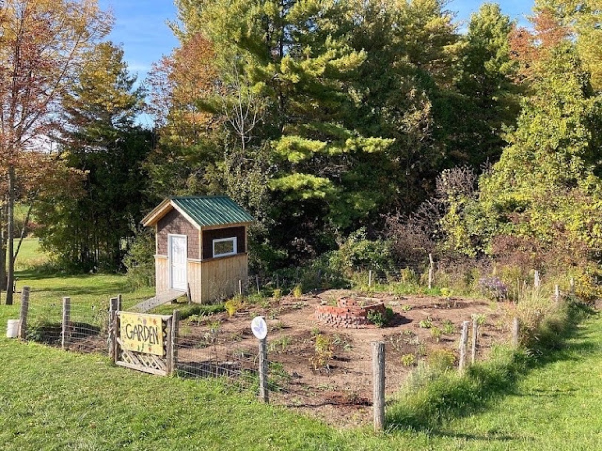
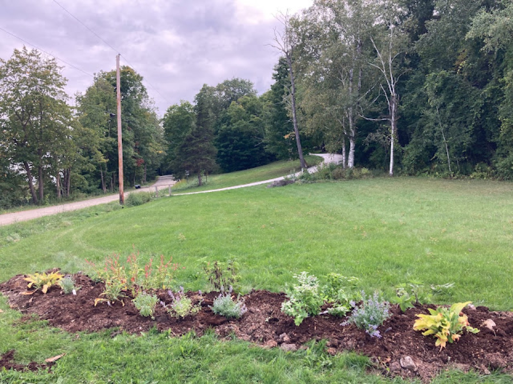
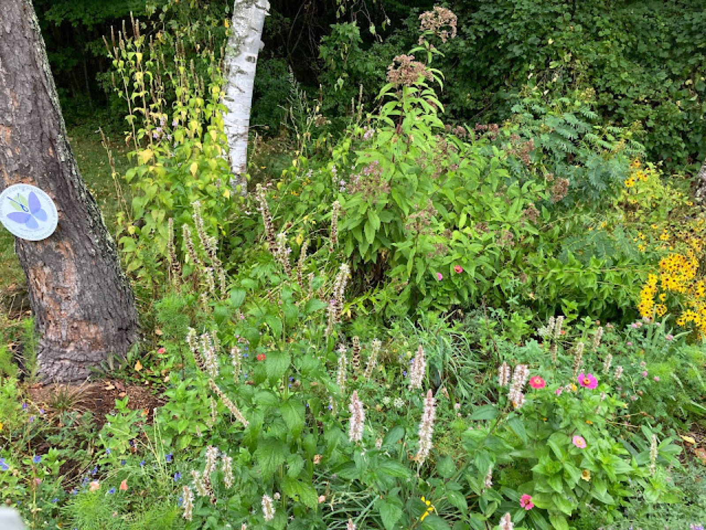
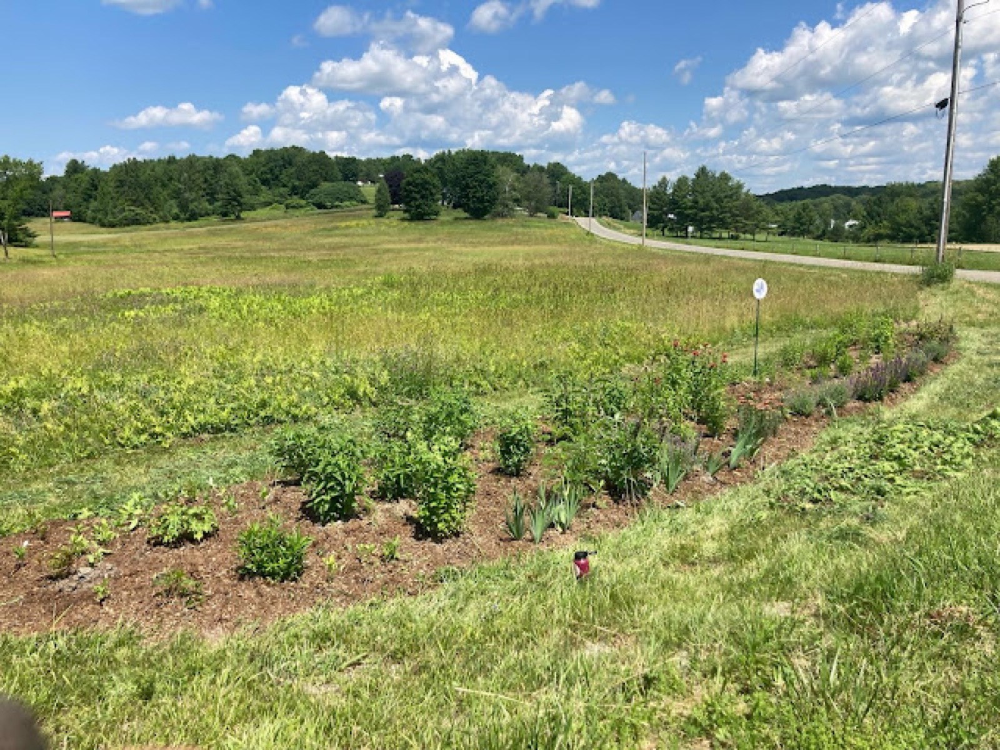
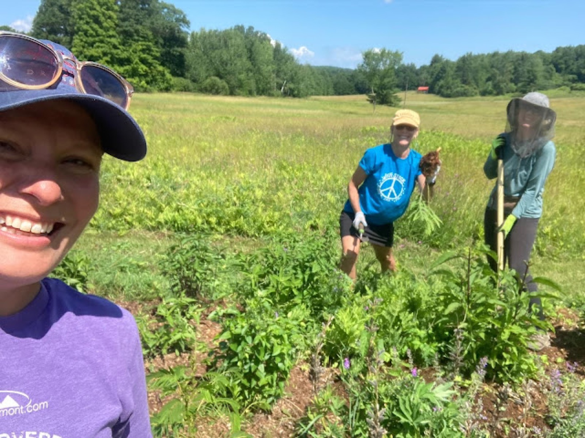

January 2023
Garden Projects and Consulting Services
2022 was an incredible year for the garden in Vermont. The neighborhood gardens and our home garden were simply spectacular, colorful, and full of life. I counted many varieties of butterflies, including the endangered Monarch and posted these findings through Vermont’s Atlas of Life on the app Inaturalist. If you are serious gardener, I encourage anyone and everyone who is curious about the life in their backyard to document the wildlife they see in their neighborhood.
The garden projects this year were inspired and supported by passionate neighbors and gardeners, now I like to think of us all as plant friends. Once you’ve built a garden with a friend you know you’ll always have something in common.
Gardens new to the neighborhood this year include a garden at the corner of Guinea rd and Spear st. in East Charlotte, another at the end of Lewis Creek rd in Charlotte, and a major installation at Monkton Central School with the Monkton Pollinator Pathway “Bee Team.” I attribute the success of these garden to the many volunteers, plant donors, Red Wagon Plants, UVM Master Gardener volunteers, and Pomerleau Foundation for funding these projects.
Before you see some of these amazing installations, I have begun offering some consulting services for the installation and maintenance of pollinator gardens. I can do some simple designs, check out your space, and create plants list. So if you are looking to make 2023 the year you kill your lawn and support pollinators, I can help!
The Guinea Road Pollinator Garden
East Charlotte, Vermont


This lovely space is privately owned, however accessible to the public. The Guinea road garden is a native plant garden featuring a Witch hazel tree. Planted with a large variety of natives and nectar plants, this install was beloved by bees and butterflies nearly the moment it was placed. The garden is located on a busy corner of Spear st that connects with the very scenic Guinea rd. Enjoy a rest under the shade of the Witch hazel after a long walk down Guinea or just stop to smell the flowers. The Guinea rd garden replaces a spot where folks used to dump unwanted items.
The Pollinator Pathway Garden at Monkton Central School
Monkton, Vermont

Bee-leive it or not, this garden has been around for quite awhile! The garden was an expansion on the school vegetable garden and meant for larger veg like pumpkins, squash, and potatoes. The garden fell into disrepair, when the volunteer force for the school garden shrunk and there simply wasn’t enough hands to maintain the space. Monkton’s Pollinator Pathway “Bee Team” came to the rescue and revamped the space. Installing pavers, fixing the herb spiral, and installing over 100 plants with the entire student body of Monkton Central School, this garden is now a buzzing, beautiful habitat. See this garden get planted and hear from the students from UVM Master Gardener show “Across the Fence.”
The Pollinator Gardens of Lewis Creek Road
East Charlotte, Vermont (Quaker’s Corners)

Three pollinators garden thrive at the end of Lewis Creek rd in East Charlotte. You likely haven’t seen them and wouldn’t know how to get there unless you are a local cyclist, runner, or walker. Despite the garden’s clandestine location, these garden are doing good work. The combination of these three gardens, all of which are planted with a wide variety of plants, support a range of wildlife. Completing this trifecta of gardens is a crescent-shaped garden along Roscoe rd. This addition has given more room for additional native plants and space to throw zinnia seeds.



Filed in the garden journal · January 2023